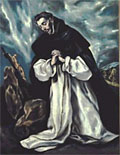

-
Dorsten, segundo día de Navidad, 1932
¡Pax!
Querida Anneliese,
Desde la soledad conventual (desde las Ursulinas de Westfalia, con las que he
podido celebrar la Navidad) correspondo, de corazón, a tus buenos deseos.
Ante todo, quiero contestar a tu pregunta.
Existe una vocación al sufrimiento con Cristo y, a través de eso,
a colaborar en su obra redentora. Si estamos
unidos al Señor, somos miembros del cuerpo místico de Cristo; Cristo continúa
viviendo en sus miembros y sufre en ellos; y el sufrimiento soportado en
unión con el Señor es su sufrimiento, insertado en la gran obra de la
redención y, por eso, fructífero.
Este es un pensamiento fundamental de toda
vida religiosa, pero especialmente de la vida del Carmelo: interceder por los
pecadores a través del sufrimiento voluntario y gozoso, colaborando de este
modo a la redención de la humanidad.
Saludos y deseos cordiales, tuya.
Edith Stein
De familia judía, se dedicó a la filosofía, dentro de la fenomenología alemana, discípula de Husserl. A los 30 años lee la "Vida" de Santa Teresa y se dice "Esto es la verdad". Meses después (1922) recibe el bautismo. En 1933 se hace monja carmelita, con el nombre de Teresa Benedicta de la Cruz. Muere en 1942, gaseada en Auschwitz. Canonizada en 1998.
De ella, sólo leí sus cartas; aunque no son -seguramente- lo más importante dentro su obra, me dieron una buena impresión de su personalidad ... tan distinta de Teresa de Jesus, y de Teresita (los santos son de lo más variado que hay). Personalidad firme, a la vez humilde y severa; me recuerda un poco a San Juan de la Cruz (a quien dedicó un estudio, "La Ciencia de la Cruz", su última obra). Los consejos y direcciones que daba en sus cartas rebosan sensatez, firmeza, y un sentido práctico bien femenino.
De las primeras cartas, cuando todavía estaba en el mundo intelectual "laico", hay varias destinadas a un amigo, Fritz Kaufmann, uno de sus compañeros de estudios y de trabajo académico, también discípulo de Husserl; un poco conflictivo al parecer. En 1925, tras un distanciamiento de 5 años, (y con la conversión de Edith en el medio), le escribe:
-
[...] Ahora tengo que hablarle de mí. ¿Por dónde comenzar, querido señor Kaufmann,
después de 5 años? Aún quisiera hacer notar algo sobre los últimos tiempos.
Si humanamente hablando yo le decepcioné -cuánto, lo he comprendido sólo después, pero doloroso y oprimente lo he sentido ya en el verano de 1919 en Gotinga- en parte se debió a que entonces a mí me iba muy mal, apenas poco mejor que a usted. Hace algunos días se me ocurrió que quizás esto nunca lo ha sabido usted y que puede aclararle algunos puntos.
La cosa comenzó muy pronto y ha durado años, con algunos cambios, hasta que he encontrado el lugar donde hay paz y tranquilidad para todos los corazones inquietos.
¿Cómo ha sucedido esto? Permítame que hoy guarde silencio sobre el tema.
No tengo ningún miedo a hablar sobre ello, y seguramente lo haré a su debido tiempo, también a usted, pero esto tiene que «darse por sí sólo», yo no puedo «hablar» de ello sin más.
Este es ya el tercer año que vivo, muy a gusto, detrás de unos protectores muros conventuales -esto es algo que puedo decir sin temeridad- como una auténtica monja, aunque no llevo velo alguno ni estoy atada por votos y clausura, y de momento tampoco debo pensar en contraer este compromiso. [...]
-
[...]
¿Por qué se arrepiente de haber hablado conmigo abiertamente?
Debería haber notado ya que todas sus objeciones no podían afectarme lo más
mínimo. Y si usted me permitió echar un vistazo a su interior, yo se, lo
agradecí sinceramente -como siempre me complace contemplar de cerca y
claramente la necesidad de una persona, porque entonces sé mejor lo que tengo
que pedir para ella-.
Creo que actualmente apenas puedo hacer otra cosa por usted. No es posible ayudarle con argumentos.
Si se le pudiera liberar a usted de toda argumentación, eso le sería de ayuda.
¿Y aconsejar?
Ya le he dado mi consejo: ser como un niño y poner la vida con
toda la investigación y cavilación en las manos del Padre. Y
si todavía uno no logra esto... pedir; pedir al Dios puesto en duda y desconocido que sea él
quien le ayude.
Ahora puede ud. mirarme con asombro, que no tengo temor de presentarme
ante usted con tan sencilla sabiduría de niño.
Es sabiduría, porque es
sencilla y esconde en sí misma todos los secretos. Y es un camino, que
conduce con total garantía a la meta.
-
Colonia- Lindenthal, 4 de octubre de 1934
¡Pax Christi!
Querida señorita Dra. Kantorowicz,
Mucho me he alegrado de su amable carta con la sorprendente buena noticia.
Me
acuerdo muy bien de la pequeña Ruth, a la que conocí cuando sólo tenía tres
años: una niñita tímida que no quería nada con nadie, excepto con los padres
y con la tía. Su buena madre se extrañó mucho de que, sin ningún género de
obstáculos, usted se dejara tomar de la mano por mí en casa de los Gordon Z y
de que se dejara llevar a otra habitación. Por medio de mi hermana [Else] e
Ilse [sobrina] siempre he estado informada de su evolución externa, como
usted lo ha estado también de la mía.
Que su conversión haya sido una alegría
para su querido padre es una gracia especial para usted y para él. Esta
alegría es, por supuesto, una señal de que él mismo estaba cerca de la luz y
de que en la eternidad habrá entrado a gozar de la amistad de Dios.
¿Quiere
ayudarme a pedir por mi madre, para que también a ella se le abra la mente?
Ahora respondo a sus preguntas. Ante todo quisiera decirle: en lo venidero
ponga confiadamente todas sus preocupaciones en las manos de Dios y déjese
conducir totalmente por él como un niño. Entonces estará segura de que no
puede errar el camino. Así como el Señor la ha admitido en su Iglesia, así
también la conducirá al lugar que quiera llevarla.
Pese a sus 33 años
quisiera aconsejarle que, de momento, deje a un lado la cuestión de la
vocación religiosa. Para Dios no hay límite de edad. Yo he sido admitida con
42 años y algunas otras personas más tarde; naturalmente, todo es más fácil
si se entra siendo joven. Pero esto no es algo que esté en nuestro poder.
Apenas encontrará un convento que la admita inmediatamente después de su
conversión. Con buen criterio, la mayoría exigen varios años de permanencia
previa en el catolicismo. Y también a mí esto me parece ahora lo más
importante para usted. Si la vocación religiosa es auténtica, aguantará el
plazo de prueba. Si es una ilusión del primer fervor, entonces es mejor
descubrirlo fuera que en el convento a través de un amargo desengaño.
Lo que me escribe sobre su formación e inclinaciones, parece que apuntan más hacia una actividad fuera (vgr. Asociación de Cáritas o Unión de Borromeo). Pero, basada en una sola carta, no puedo emitir un juicio al respecto. Si quisiera entrar en una Orden, debería abandonar toda pretensión de escoger el modo y manera de trabajar y dejar a sus Superiores que, en santa obediencia, determinen cómo utilizar sus dones y conocimientos. El horario del Carmelo deja muy poco tiempo para el trabajo intelectual. Que a mí se me haya concedido esta posibilidad en el Noviciado es una excepción.
Por el momento, le diría: Permanezca tranquila en su puesto hasta que no
reciba de arriba una señal clara que la lleve a abrazar algo distinto.
Aproveche su tiempo libre para conocer y amar cada vez más a Dios y a su
santa Iglesia: los dogmas de fe, la liturgia, nuestros santos; pero también
las organizaciones católicas y la vida católica de hoy, incluso con sus
sombras, que, a la larga, no podrán permanecerle ocultas.
Si anda falta de
relaciones humanas en Hamburgo, con mucho gusto trataría de ayudarle. Siempre
que lo desee puede dirigirse a mí con sus preguntas (por escrito o también,
eventualmente, de viva voz). Naturalmente, por mi parte, nada diré a los
Gordon, en tanto que usted no indique otra cosa.
Con mis más cordiales deseos para su ulterior camino, en el amor de Cristo, su hermana,
Teresia Benedicta a Cruce OCD
La madre de Edith Stein -judía- sufrió mucho a causa de su conversión, y no pudo resignarse a que su hija se hiciera monja católica. Más de esto en otro post...
Día especialmente indicado para darse una vuelta por Disputations. Ya que hoy es la fiesta de Santo Domingo (felicidades a Tom y a los otros dominicos -habrá otros? [*] - que anden por acá). Y continúa la historia del obispo Booster y el inimitable Monseñor Reeves.
[*] No sé si hay otro, pero parece que hay otra: me escribe Flavia, terciaria dominica, que además me aporta un texto de Fr. Jerónimo Savonarola (todo un personaje, para tratar otro día... no recordaba que fuera dominico) sobre Santo Domingo, con el adecuado acompañamiento del cuadro del Greco:
-
"Se dice del Bienaventurado Domingo que su trato siempre resultaba alegre y abierto, por lo cual era amado de todos con afecto profundo. Quiso, efectivamente, que sus conventos fueran edificados en las ciudades para tratar

con todos y ser útil a todos; por eso gastaba el día con los hombres y la noche con Dios; por eso predicaba la caridad que dilata el corazón, y lo hace todo fácil. (...) por eso cuando alguien le preguntó dónde encontraba explicaciones tan justas, él respondió: "En el libro de la caridad."
Vosotros hermanos, que queréis estudiar la Escritura, que queréis predicar, por tanto, tened caridad y ella os instruirá. Tened caridad y entenderéis la caridad. Porque el Bienaventurado Domingo estaba totalmente dado al amor al prójimo para traerlo al buen camino mediante la predicación y el ejemplo, por ello mismo pudo ofrecerse a Dios como sacrificio en olor de suavidad (...) en el fuego del Espíritu Santo y en el amor al prójimo y en el de las tribulaciones: todo ello subía a la presencia de Dios como un olor suavísimo."
Me hacen llegar unos textos de Giovanni Guareschi, en La Vuelta de Don Camilo.
-
"... Pepón estaba domando una gruesa barra de hierro que debía convertirse en alguna pieza complicada de una verja y de cuando en cuando probaba el martillo sobre el yunque y el yunque cantaba.
A Pepón le gustaba mucho batir el hierro. Batir el hierro rinde menos que trabajar en torno a los motores, pero alegra.
Poner a punto un motor de tractor o de automóvil es como buscar el error que impide funcionar una operación aritmética: el hombre se pone al servicio de la lógica inflexible de la máquina, y es una tarea humillante.
Sacar a martillazos algo de una barra de hierro es imponer la propia voluntad a la materia. Metal es el de un motor y metal el de una verja, pero en el primer caso quien manda es el metal, en el segundo, quien manda es el hombre. ..."
Dos más. A Don Camilo, cura pobre de un pueblucho de la llanura del Po, le roban su bicicleta, que había dejado apoyada sobre una pared al entrar a un bolichito a comprar una baratija:
“No hizo alboroto (...) Pasó delante del puesto de los carabineros, pero no pensó siquiera entrar: el hecho de que a un pobre cura con veinticinco liras en el bolsillo le hubiesen robado la bicicleta era de carácter moral, sobre todo, y por lo tanto un asunto que no debía ser mezclado con los casos normales de la vida. Son los ricos los que, cuando les roban, corren enseguida a denunciar el hurto, pues para ellos es un simple asunto de dinero, mientras que para el pobre, padecer un hurto es una ofensa: tal como si, a quien tiene una sola pierna, un maldito cochino le diera adrede un empujón o le rompiera la muleta.”
Antes, el autor ha descripto qué significa una bicicleta de campo en aquellas brumosas y pobres tierras de la Bassa (la Baja), como se llama a aquella llanura: un medio de transporte universal allí. Cómo no debe ser una bicicleta brillante sino destartalada por el uso: manubrio torcido y sin mangos, sin guardabarros ni frenos, cubiertas emparchadas, un solo pedal y sólo el perno del otro (qué es lo único que debe brillar, pulido por el uso), o cómo los lugareños, viejos campesinos, no usan bicicleta de varón sino de mujer: así es como la bicicleta “se incorpora de veras al paisaje y no da siquiera de lejos la idea de que pueda servir de espectáculo”:
“Por lo demás, un hombre de ciudad estas cosas nunca llegará a entenderlas, porque el hombre de ciudad entiende tanto de cuestiones sentimentales como una vaca de poesía lírica. Tipos que están repletos hasta los ojos de porquerías morales, y que llaman ‘equino’ a una yegua porque, a su juicio, llamar yegua a una yegua no es una cosa limpia. Y llaman ‘toilette’ o ‘water closet’ al excusado, pero lo tienen en su casa, mientras en la tierra baja lo llaman letrina, pero lo tienen todos bien lejos de su casa, en el fondo del corral. El ‘water’ en la pieza inmediata a aquella en que duermes y comes sería el ‘progreso’ y la letrina fuera de donde vives sería la ‘civilización’. Es decir, una cosa más incómoda, menos elegante, pero más limpia.”
-
Los dedos de los sacerdotes serán conocidos en
el Purgatorio, y aún en el Infierno, y arderán con un fuego especial.
Todos los reconocerán y vituperarán.
Ana Catalina Emmerich
Invité a Algarañaz a dedicarse al periodismo deportivo; y Juan Pablo me lo reprocha. (Lo único que falta ahora es que comente fútbol! )
Tiene razón, en realidad. Yo sólo pensaba en el bien del periodismo "religioso" (bueh!), pero me olvidaba de los daños colaterales.
Es típico; uno, por sacar el mal de un lado, lo mete en otro; hay que mirar todos los aspectos de la cuestión, para no hacer injusticia a nadie.
Algo remotamente parecido se me cruzó con algo
que leí en algún weblog hace poco. Alguno proponía un sinceramiento: admitir
-y decirlo en voz bien alta- que "Castelo nunca hizo reír a nadie"; alguien entonces aportó una analogía: "Castelo es el Nito Mestre de Lanata".
No está mal. Pero, después pensé , también es un poco duro o injusto.
Para con Charly García, digo.
Una que no conocía y que me gustó mucho, del libro sobre San Francisco:
En 1220 cinco frailes de la entonces joven orden franciscana fueron a misionar a tierras de musulmanes (sur de España, Portugal y Marruecos). Tras unas cuantas idas y venidas, acabaron torturados y decapitados.
Un año después, se leyó la relación de ese martirio en el "Capítulo" (asamblea de la orden) que se celebraba en Pentecostés. Cuentan que Francisco, al advertir que los frailes se enfervorizaban, orgullosos de tener cinco mártires en la orden, hizo interrumpir la lectura y la dejó trunca.
-"Nadie debe glorificarse sino de su propio martirio", dijo.
Me impresionó esto, y recordé el caso de tantas canonizaciones de religiosos que son promovidas por la propia orden/congregación/etc... Triste poder el de lo social, que nos hace estar orgullosos del mérito ajeno, solamente porque "es de los nuestros". No diré que siempre sea así; no diré que alegrías (y aun "orgullos") de ese estilo no sean a veces legítimos y puros ; pero se me hace que la mayoría de las veces, la advertencia de San Francisco viene como anillo al dedo.
Y por supuesto que eso no es cosa exclusiva de las órdenes religiosas.
Sin ir más lejos, esa alegría (ese orgullo?) que uno siente
al contemplar la santidad de tipos como San Francisco, la Madre
Teresa de Calcuta... en la medida en que esa alegría
se fundamenta en su "pertenencia" a la (nuestra?) Iglesia, en esa
medida, creo, esa alegría tiene algo de impura.
Claro que esto no es motivo para ahogar esas alegrías, sólo para
purificarlas.
De un diccionario literario ( http://www.arrakis.es/~trazeg/indexdi1.html ):
-
CUARTETA
Estrofa que contiene cuatro versos octosílabos, que riman el primero con el tercero y el segundo con el cuarto, igual que el serventesio(ABAB). Ej:
- Y todo un coro infantil
va cantando la lección
mil veces ciento, mil;
mil veces mil, un millón.
(Antonio Machado. Sevilla, 1875-1939)
Bien, cualquiera puede equivocarse, ya sabemos. Todos nos equivocamos,
sobre todo escribiendo páginas web...
Pero esta pequeña errata tiene su gracia ... podríamos decir que es una errata doble, y peor.
Doble, porque el error es de matemática por un lado, y de
versificación por el otro. Y peor, porque el error se
produce justo en un material específicamente didáctico ...
(con semejante ejemplo, se me hace que ni los lectores
van a aprender a versificar, ni los alumnos a multiplicar).
PS: Recién una amiga me comentaba que de la lectura de lo anterior creyó que yo creía que el error era de Machado (y con el post de Mairena ... no estoy seguro). Así que por las dudas, aclaro: el error es del que hizo la página y mal-trascribió la cuarteta; Machado acaso no fuera buen matemático -no sé- pero jamás de los jamases iba a comerse así una sílaba! Original acá (y en Mairena).
PS2: Otro lector se apresura a explicarme que a los versos agudos se les suma una sílaba.... Aydió.. Ya lo sé, hombre, ya lo sé; pero no se trata de eso... Se trata del tercer verso (ni 6+1 da 8, ni 1000 x 100 da 1000). Y si tampoco con esto se entiende... bueno, pasemos a otra cosa.
La Madre Teresa empezó su obra en Calcuta en 1948 (si bien ella conocía el lugar desde 1929). Su congregación fue creciendo y haciéndose conocida lentamente; pero el salto a la fama se produjo en 1969-1970 (ella andaba entonces por los 60 años) cuando Malcolm Muggeridge la conoció y filmó un documental para la BBC, y le hizo una entrevista. Si bien ella era muy reticente para esas cosas, él había quedado muy impresionado por la personalidad de la Madre, y su entusiasmo pudo más.
El programa tuvo una repercusión increíble, y así empezó a ser conocida.
Al año siguiente Muggeridge editó un librito, resumiendo la entrevista
y su experiencia personal.
Librito que conocí hace poco.
Hay varias cosas lindas para citar,
sobre todo en estas fechas... Va esto para empezar.
Cabe aclarar antes que Malcom Muggeridge era un periodista muy (pero muy) conocido en Inglaterra, un tipo muy pintoresco, irreverente, con su pasado comunista... Y no era católico, por cierto, cuando conoció a la Madre Teresa. Quien -dicho sea de paso- también al parecer le tomó simpatía.
-
«... allá por los años treinta y cinco, yo había
vivido dieciocho meses en Calcuta como periodista del Statesman; y a pesar de todo el confort de
la vida europea -la heladera, los criados, el
paseo a caballo por la mañana alrededor de Maidan o en
el Jodhpur Club, más otras comodidades- todo el conjunto me parecía casi inaguantable. Sin
embargo, las condiciones de entonces eran mucho menos duras que las de hoy día [...]....
así pues, elegir, como lo hacía la madre Teresa, vivir en los suburbios de Calcuta, en medio de la basura,
de la enfermedad y de la miseria aparecía como señal
de un espíritu tan intransigente, de una fe tan entera y de una caridad tan llena que yo quedé
deslumbrado.
Entre mis recuerdos de aquellos meses, se destaca con fuerza el de un incidente que me afectó mucho entonces, hasta
el punto de que me perseguía en mis sueños. Una tarde en que yo iba en mi coche, mi chófer
atropelló a uno; hoy lo mismo que entonces es casi inevitable dada la muchedumbre de peatones que
invade toda la calzada. Así es que, conociendo bien los tumultos que brotan
ordinariamente cuando un automóvil europeo queda implicado en un accidente de circulación, muy
prudentemente mi chofer saltó del coche, recogió al herido, lo sentó a su lado y salió a toda
velocidad hacia el hospital más próximo.
Intenté yo tranquilizar mi conciencia cuidando de que el
herido fuese debidamente atendido (por fortuna no era la cosa muy grave); siendo como era un
sahib, le acompañé al servicio de urgencia. La confusión y el horror que reinaban allí eran
inconcebibles; los enfermos estaban tirados en el suelo a través de todos los pasillos. Y
mientras yo esperaba trajeron a un hombre que se acababa de cortar la garganta,
de una oreja hasta la otra.
Esto ya era demasiado; y yo huí hacia el confort de mi apartamento, y tras tomarme un whisky, me sentí en condiciones de discutir durante años acerca de la lamentable situación social de Bengala, para gritar escandalizado y formular mis protestas ante las autoridades competentes, etc, etc...
Yo me largué. La madre Teresa se quedó.
Esta fue precisamente la diferencia.
Ella, una religiosa más bien débil, con algunas rupias en el bolsillo, ni especialmente inteligente,
ni particularmente dotada en el arte de la persuasión; y llevando por todo equipaje solamente la
irradiación de la caridad cristiana en su corazón y sus labios.
Sencillamente dispuesta a seguir a
su Señor, y como él había enseñado, pronta a reconocerlo en el moribundo abandonado en la acera; a
oír en el grito del niño extraviado, incluso en el llanto del bebé demacrado, al niño de Belén; a
reconocer en los muñones de los leprosos las manos que supieron dar la vista a los ojos ciegos, y
a inclinarse sobre los desesperados y atenderles, curando la carne enferma y los miembros heridos.
En cuanto a mis discursos sobre la lamentable situación social de Bengala, siento tener que decir que ante los ojos de Dios, dudo que valgan ni tan siquiera lo que una de las suaves sonrisas que la madre Teresa sabía dirigir al huérfano que encontraba por las calles.
Lo que los pobres echan más en falta, decía acertadamente la madre Teresa, y más todavía que el
alimento, los vestidos y el refugio (aunque de todo ello carecen y bien gravemente) es sentirse
necesarios para hacer algo y sentirse amados. Verse como desterrados es lo que más les duele en su
pobreza y les ulcera el alma.
Ella tiene en su corazón un sitio para todos. Todos eran y son para
ella hijos de Dios, por los que murió Cristo; todos merecen nuestro amor.
Si, para Dios mismo,
cada uno de sus cabellos están contados, y nadie queda excluido de la salvación que ofrece la
cruz, ¿quién se atreverá a excluirlos sobre la tierra de los favores que necesitan y de ser
considerados como hombres? ¿quién se atreverá a juzgar que su vida inútil estaría bien que
terminase o que no hubiese comenzado?
Jamás he encontrado un sentido más perfecto de la igualdad
humana como lo encontré en las relaciones entre la madre Teresa y los pobres. Su amor hacia ellos,
reflejando el amor de Dios, los hacía iguales para ella, como son iguales los hermanos y las
hermanas de una familia, cualquiera que sea la diferencia en dotes intelectuales, en belleza o en
gracia.
Esta es la igualdad que ella vivía, que no puede encarnarse en leyes ni imponerse por la fuerza, ni ser promovida a fuerza de protestas y revueltas, puesto qué se desprende del amor de Dios, que, como la lluvia del cielo, cae igualmente sobre justos e injustos, sobre pobres y ricos.... »
Webeando, encuentro que aquel reportaje a Larry Wall, (icono de la computación, el creador del lenguaje Perl), y específicamente la parte religiosa, ha sido transcripto en muchos sitios, sobre todo blogs. Por ejemplo.
-
... No poseía Francisco un espíritu crítico. A nadie censuraba
sino a sí mismo [...]
En esto se distinguía de los demás reformadores de su época. Aún los más llenos de adhesión a la Iglesia, como Roberto de Arbrissel, cedían a la tentación de apuntar sus críticas a lo exterior, a los defectos del clero, y no a las flaquezas del propio corazón.
Por el contrario, Francisco, con instintiva seguridad, comprendió que de nada sirven tales reformas sin la interna corrección individual; alcanzó así aquella renovación ética que no habían podido realizar las bulas de excomunión del papado, ni los arrebatados sermones de los predicadores seglares. Una vez más, se mostró así que Dios no se manifiesta con violencias.
(San Francisco de Asís - J. Jörgensen)
Ya estamos en nueva casa y nueva IP. Breve interrupción del servicio -una o dos horitas- hoy a la tarde, pero eso fue -o debería haber sido- todo.
-
... una especie de segunda caída o, cuando menos, «error» de los Elfos.
En rigor, no había nada de malo en que se demoraran [en la Tierra Media] a pesar de los consejos recibidos, todavía entristecidos en las tierras mortales de sus antiguas hazañas heroicas.
Pero querían comerse el pastel y conservarlo al mismo tiempo.
Querían la paz, la beatitud y la perfecta memoria del «Oeste», y permanecer, sin embargo, en la tierra donde su prestigio como pueblo, por encima del de los elfos salvajes, los enanos y los Hombres, era mayor que el que ocupaban en la jerarquía de Valinor.
Así pues, los obsesionó la idea de la «mengua», el modo en que percibían los cambios del tiempo (la ley del mundo bajo el sol).
Se volvieron tristes, su arte (lo diremos así) se convirtió en la obra de un anticuario, y sus esfuerzos todos, en una especie de embalsamamiento; aunque también conservaron el antiguo motivo de su especie, el adorno de la tierra y la curación de sus heridas....
J. R. R. Tolkien
Carta
a M. Waldman
- «
...durante la conquista cuando se discutió si era legítimo bautizar a los indígenas, los teólogos vaticanistas discutían si aquéllos podían ser animales racionales. Fue así que algunos teólogos de trinchera les informaron a los papas que, aunque no entendieran latín, estos individuos de aquí presentaban una sensibilidad con la música y una cordialidad que los hacía merecer el trato de humanos
...»
Estos están demasiado satisfechos con sus propias mitologías y sus propias credulidades, de modo que sería inútil pedirle referencias (el nombre de algún "teólogo vaticanista", o algún escrito, -o algún Papa!- que negara -o pusiera en duda- que los indios eran seres humanos, etc [*]).
Se non e vero, e ben trovato, me dirán...
La propaganda -y la de Página 12 sobre todo-
no tiene ninguna relación con la verdad.
"Si no es verdad, nos gusta creerlo", debería ser su slogan.
Igual, es interesante (ejemplo de cómo funcionan los intelectuales al servicio de la propaganda ideológica) la creación de seres míticos dirigidos a poner orden en el universo mental de los educandos: en este caso, tenemos el "teólogo vaticanista" (el malo) versus el "teólogo de trinchera" o "teólogo de base" (el bueno).
Otra perla (significativa sobre todo para los argentinos, que hace unos añitos nos complacíamos vergonzantes en la ilusión de pertenecer al primer mundo comprando el último teléfono celular) es ésta:
- «
...Creo que con las uniones homosexuales está pasando lo mismo: teólogos del Vaticano señalan que son modos enfermos de relacionarnos y que como con la droga, si se despenalizara este estilo de convivencia, casi se lo favorecería. Otros sentimos orgullo de esta nueva democracia argentina en la que se aceptan otras formas, y que son estas decisiones las que nos validan como ciudadanos del Primer Mundo.
...»
-Tenemos que parecernos a EEUU !!
- No, no! Tenemos que parecernos a Holanda!
Están de acuerdo en que debemos parecernos al Primer Mundo, eso sí. Y están de acuerdo en que ellos son las únicas alternativas; argentino: o estás con uno, o estás con otro, te dicen; si no te gusta Página 12, te gusta Infobae.
Sigue el teólogo de trinchera:
- «
En Jesucristo no existe ningún tipo de condena hacia la homosexualidad. Lamentablemente ¿o por suerte?, no escribió tratados de moral sexual,
[...]
En relación con el pecado de sodomía a que alude la Biblia, existe un amplio consenso entre los escrituristas en entender que no se refería al modo como los sodomitas se vinculaban sexualmente, sino a la soberbia y a la petulancia de quienes vivían a espaldas de Dios
...»
La semana pasada Verbitsky nos enseñaba que no teníamos que preocuparnos por las condenas bíblicas a la homosexualidad -como tantas otras- porque la moral es relativa, cambia con el tiempo; ahora este nos enseña que no debemos preocuparnos porque lo que se condena no es el acto homosexual sino la soberbia. A ver si se ponen de acuerdo, que el alumnado puede confundirse. Quién sabe si alguno no termina mezclando las dos explicaciones ("La Biblia condena la soberbia y la petulancia; pero las condenas morales de hace 2000 o 3000 años no se aplican hoy día... ergo...").
Y respecto de lo de que Jesucristo no condena la homosexualidad,
que no escribió tratados de moral sexual.
Jesucristo -sabrá este teológo- no escribió nada, y de
moral "aplicada" enseñó poco.
No condenó la homosexualidad, como tampoco condenó
la violación, la tortura, la esclavitud, ni los abusos
del imperio romano, ni nada por el estilo. El evangelio
no se trata de eso, sino que la moralidad es como un
fruto de la vida nueva, de la pureza del corazón.
Y si Jesús hablaba poco de temas
"legales", justamente uno de los pocos casos
en que dio un dictamen sobre uno de esos
temas candentes fue sobre
el matrimonio
como algo sancionado por Dios (el hombre y de la mujer
"atados" por sanción divina); cosa que a los mismos discípulos,
como se ve en el contexto, resultó demasiado poco
progresista y un poco duro.
No me cabe duda de que estos teólogos
de trinchera tendrán alguna exégesis tranquilizadora
(para los lectores de p12) de este episodio, como
de aquello de que "mirar
a una mujer con deseo es cometer adulterio en el corazón".
Para mí, es suficiente.
[*] Sería interesante por otro lado preguntar a los teólogos
de trinchera de P12 su definición de "ser humano"; y si para
ellos es tan ser humano un indio desnudo y salvaje como
un intelectual europeo, podríamos también preguntarle si
un feto de varios meses es tan ser humano como un bebé
de un año.
Y habría que recordarles que los que sí pusieron en duda
el caracter humano de los "hombres inferiores" (no eurpoeos)
fueron
-y no en el siglo XVI sino en el siglo XIX- tipos como Darwin,
por ejemplo, que quisieron encontrar en el negro
de Africa una especie intermedia entre el hombre
y el mono. Pero eso es menos agradable de recordar.